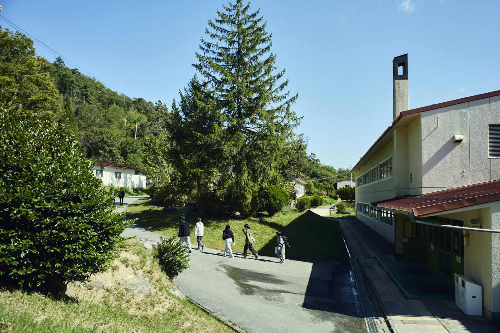

人は、ゆっくり変わっていく。
GROW ・ VOICE ・ FUTURE入学直後の不安から、仲間との暮らしへ。そして、自分の考えを話し、人のために動ける人へ。在校生と保護者の言葉で、その変化をお伝えします。

入学からの変化の道のり
不安
親元を離れ、初めての共同生活へ
適応
自分のことを自分で。仲間ができる
成長
自分の考えを話し、人のために動ける
保護者アンケートで選ばれた、子どもの変化
回答37件・複数回答
入学1ヶ月、生徒の声
今まで親にやってもらっていたことも、だんだんとできるようになっている
中1生徒Q. 寮生活で、好きな時間は？ ── 一人で夜さんぽをする時間と、友達と一緒に星を見る時間。
中1生徒携帯がないから勉強に集中できるし、聖書と向き合う時間が増えた
高1生徒親離れができなかった自分が、友達のおかげでできるようになった
高1生徒「管理する親」から「見守る親」へ。
変わったのは、子どもだけではありませんでした。口出しが減り、信じて待てるようになった。そんな声が、多くの保護者から届いています。
「学力以前に大切な“土台”を、しっかり育てたかった。」
小学6年生の頃は、ゲーム以外に興味を示さず、家族ともほとんど話さない毎日でした。
宿泊型のオープンキャンパスで在校生と話し、「この学校ならきっと大丈夫だ」と入学を決めました。
今では家族と自分から話し、挑戦し、感謝を口にし、家事も手伝うように。
「先生方は、親以上に息子のことを理解してくださっている。LINEやブログで日々の様子が届くので、電話でも話題が尽きません。」
広島三育学院 公式note「保護者インタビュー」より要約 全文を読む
「かわいい子には旅をさせよとは、本当でした。我が子を12歳で旅に出すのは寂しかったですが、たくましく成長してくれました。」
高2保護者（アンケートより）
「寮なんかに入れて寂しくないの？とよく言われるけれど、こんな経験をプレゼントしてあげられることを誇りに思っています。」
高2保護者（アンケートより）
三育に来て変わったこと。私の before → after
チャレンジ精神が身についた！
- Before
- できないことが恥ずかしく、挑戦から逃げていた
- After
- 失敗が怖くなくなり、挑戦が楽しくてたまらない
三育にいる人たちは全員が優しくて、失敗しても慰めてくれたり、アドバイスしてくれたりします。
「生活力」が身についた！
- Before
- 親に任せきりで、スマホばかりの毎日
- After
- 洗濯も片付けも自分で。思いやりも「生活力」
先輩や同級生のおかげで、生活力が身につきました。ここでは「人のために」を、多くの人がモットーにしています。
生徒を支えるリーダーに
- Before
- 行事には「参加するだけ」だった
- After
- 憧れの先輩を目指し、男子寮の寮長に
この学校のリーダーは「一人でみんなを引っ張る」のではなく、「みんなを支える」リーダーです。
行動力・思考力が身についた！
- Before
- 考えるのは好きでも、行動に移せなかった
- After
- 毎日の中で、考えて動けるように
三育は正直「便利」とは言えない環境。でも、“不便”をどう“便利”にするかを考えられる場所です。
自分を前に出せるようになった
- Before
- 人前に出るのも、人と話すのも苦手だった
- After
- 寮役員や特別讃美で、発信する力がついた
寮生活では、自分の長所を見つけ、弱い部分を成長させることができます。
日頃から考えるようになった
- Before
- ぼーっとしやすい性格だった
- After
- 寮・挑戦・聖書を通して、考える習慣が
今では、ぼーっとし続ける方が難しい。この学校で「考えること」を学べました。
在校生の作文「成長記録」より要約。在校生・保護者・卒業生の声は、公式noteでも発信しています。
誰かの正解ではなく、自分の道へ。
「○○大学に○名合格！」という見出しは、本校の案内にはありません。全人教育を通して一人ひとりの可能性を“ヒロゲル”ことを大切にしてきた結果、卒業生の進路は医療、芸術、理系、文系、リベラルアーツ、専門学校、就職と多岐にわたります。偏差値の“高さ”ではなく、進路の“幅”に、三育の教育の成果が表れています。
進学先の内訳
入試方法の内訳（毎年約7割が推薦で進学）
受験方法に合わせた、一人ひとりのサポート
課外活動や寮の役員、ソアン、音楽活動に取り組み、語れることの多い高校生活を送った生徒にとって、人としての総合力を見てもらえる推薦・総合型選抜は大きな追い風です。受験方法ごとに異なる志望理由書・面接・小論文の準備を、担任と教科担当が一人ひとりに合わせて指導。寮生活と少人数制だからこそ、生徒の日々を知る教員が、その生徒の言葉で志望理由を語れるまで伴走します。
進学先の例（23〜25年度卒業生）
公募制・総合型を含む
大学のその先に、それぞれの道。
法律、医療、IT、音楽、メディア、教育。進んだ分野も、たどり着いた仕事も一人ひとり違います。それでも多くの卒業生が、仕事の土台として同じものを挙げます。規則正しい生活、他者との関わり方、自分と向き合う時間。寮生活で身についたものが、社会に出てから少しずつ力を発揮していきます。
法律・行政
法学部から法科大学院へ。弁護士として地域で活動
医療・福祉
海外の医学部で学び、外科医から病院の経営者に
IT・ビジネス
外資系IT企業のコンサルタントを経て、セキュリティ分野の専門家・講師に
音楽・芸術
吹奏楽と聖歌隊を6年間。音楽大学の作曲科からプロの音楽家に
メディア
ラジオDJやスポーツイベントのMCとして活躍
教育・宗教
三育で学んだ価値観を胸に、教員や牧師として次の世代を育てる
卒業生の歩みから一例を紹介したものです。このほかにも、卒業生はさまざまな分野で活躍しています。
規則正しい生活と、自分と向き合う時間が、今の自分の基礎になっている。
卒業生自立すること、計画を立てること、友だちをつくること。
卒業生寮での人間関係や、勉強以外の出来事から学んだことが、仕事で生きている。
卒業生卒業生の声（同窓会noteより要約）
三育学院大学
看護学部の単科大学。キリスト教精神に基づくホリスティック・ナーシングを学ぶ。千葉県大多喜町・東京都杉並区
専門学校三育学院カレッジ
神学科（神学専攻・キリスト教学専攻）。牧会・宣教・教育などの働きへ。千葉県大多喜町
卒業しても、帰れる場所が世界中にある。
三育で過ごした時間は、卒業で終わりません。全国・全世界に広がる同窓生と、世界中の教会が、その後の人生を支えるつながりになります。
同窓生
全国・全世界に広がる卒業生のつながり。進学先や職場で、三育の先輩に出会うこともあります。
教会
世界中のセブンスデー・アドベンチスト教会が、卒業後も帰れる場所になります。
広島開校から、半世紀
1977年の広島開校から50年。積み重ねてきた卒業生の歩みが、そのままつながりの厚みになっています。
読むだけでは、三育はわからない。
ひとつでも気になったら、一度キャンパスへ。見学も、宿泊体験も、相談だけでも大丈夫です。